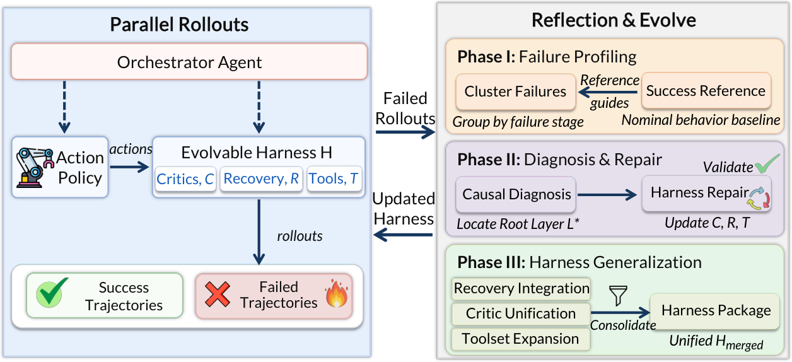
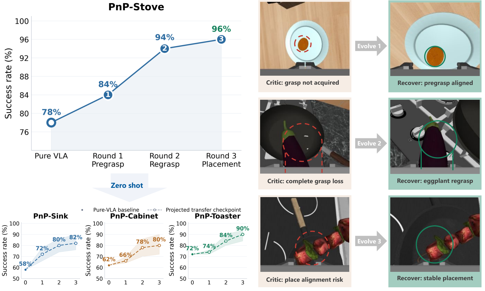

Zetta: A Closed-Loop Embodied Harness for Self-Evolving Physical Intelligence
Paper: arXiv 2608.16590 (v1, Aug 17 2026), by Xin Ding, Liang Mi, Mingzhe Huang, Zixuan Wang, Chao Zhang, Zixu Hao (equal contribution), Fu Chen, Xiangyu Li, Yikai Zheng, Yaoyu Guo, Weijun Wang, Kun Li, Hao Wu, Yunxin Liu, Ting Cao — Institute for AI Industry Research (AIR), Tsinghua University, and Z-Trans AI. Grounded in the full arXiv HTML text.
TL;DR
- Zetta ports the frozen-model/evolving-harness recipe to robot manipulation, where the binding constraint text-agent harnesses never face is frequency: physical failures unfold at millisecond timescales, far above what an LMM can adjudicate per step. The fix is to make the evolving artifact code — runtime critics \(C\) scanning the trajectory every action step, a recovery playbook \(R\), a synthesized toolset \(\mathcal{T}\) — with a fixed orchestrator adjudicating only when a critic fires and evolution agents fully offline: three loops at action, rollout-batch, and iteration timescales.
- With base VLAs frozen (\(\pi_{0.5}\) on LIBERO-Pro, GR00T N1.5 on RoboCasa), held-out success scales with self-exploration: RoboCasa's 18-task macro climbs 73.56 → 93.56% over four validated repair rounds; LIBERO-Pro Goal rises from 31.0/38.0 to 92.5/89.0% (T/S) — the abstract's 90.8% is the Goal-suite average; the full 40-pair macro is 32.00 → 71.13.
- Skills transfer zero-shot because critics key on task-independent physical variables (PnP-Stove's pregrasp/regrasp/placement stack lifts three unevolved PnP tasks 64 → 84% macro), and discrete "Aha moments" appear when diagnosis finally hits the true bottleneck. Z-Infra raises rollout throughput 1.7 → 35.1 ep/min (20.6×) and cuts latency 11.1× vs the agent-in-the-loop RPent baseline.
Why this matters
Every harness-evolution system in this tracker — Evo-Harness, Living-Harness, DarwinX, Harness-R1 — operates in a regime where the harness can afford to be an LLM call: text agents act at seconds-per-step. Zetta is the first item here to hit the regime where that breaks. A slipping grasp cascades into episode failure in milliseconds; post-hoc reflection can diagnose it but can't govern it, and an agent-in-the-loop harness (their RPent baseline: 392–513s per episode) is 11.1× too slow to matter. Zetta's answer generalizes beyond robotics: compile the harness's runtime half into code that runs at environment frequency, and reserve model intelligence for two slower loops — event-driven adjudication and offline evolution. Coding-agent harnesses will want the same pattern as they move toward governing sub-second tool streams or fleets of parallel rollouts.
Also worth noticing: the evolved artifact is a versioned package — SKILL.md (milestones, adjudication rules, re-entry predicate), tools/, plans/, params/ — literally the skills-package shape, populated by an automated diagnose-repair-generalize pipeline behind a hard validation gate.
The core idea
A frozen VLA is an open-loop feedforward policy with no sensory-motor error correction; an LMM orchestrator is smart but slow. Zetta inserts an evolvable layer between them:
where critics \(C\) are code-level monitoring functions scanning the trajectory \(\tau_{0:t}\) at every step, emitting auditable failure evidence \(e_t\) (collisions, stalled progress, grasp loss) and a suggested execution mode \(\hat{\sigma}_t\); the fixed orchestrator \(\mathcal{A}_{orch}\) approves the actual mode \(\sigma_t\) (VLA vs a specialized tool) using recoveries \(R\), tools \(\mathcal{T}\), and task knowledge \(\mathcal{K}\). Critics run at high frequency; the LMM is event-driven, invoked only on validated evidence. Evolution then optimizes only \(\mathcal{H}\):
with policy \(\pi\) and orchestrator both invariant (\(\nabla\theta=0\)). Code gives no gradients, so updates are an "SGD-like" bounded search in code space (drawing on SkillOpt and EmbodiSkill), disciplined by causal diagnosis and a validation gate.

Figure 2 from the paper: (left) online execution — the frozen action policy runs under harness \(\mathcal{H}=\{C,R,T\}\) with orchestrator adjudication; (right) failed rollouts drive Phase I failure profiling, Phase II causal diagnosis + minimal repair at root layer \(L^*\), and Phase III consolidation into a versioned harness package fed back into execution.How it works
Loop 1 — critic-governed action loop (online). Rollouts log traces \(\tau=\{(s_t,a_t,\mu_t,\phi_t)\}\) — state, action, semantic-milestone status \(\mu_t\), physio signals \(\phi_t\) (collision intensities, contact forces). Successes build a nominal-state index \(I_{succ}(\mu)\); failures get a First Missing Milestone \(m^{*}\) and an Earliest Observable Divergence
the first step where the state leaves the healthy distribution (\(\mathrm{dist}\) a state-space metric, \(\epsilon\) a preset threshold) — this lets diagnosis see the moment of failure rather than its downstream wreckage, the thing episode-level reflection structurally can't do.
Loop 2 — rollout-batch candidate proposal (offline). A diagnosis agent clusters failures by \((t_{EOD}, m^{*},\) relative poses, active tools\()\), picks a medoid seed per cluster, and — under a single-view grounded protocol to suppress multiview hallucination — runs top-down causal diagnosis over layers Evaluation → Critic → State → Planning → Recovery → Parameter, committing to the highest layer \(L^{*}\) that explains the failure. The stated principle: "if high-level logic resolves the failure, never modify low-level parameters" — parameter-forcing repairs corrupt the VLA's action distribution and wreck held-out generalization. A repair agent writes a minimal patch \(\{C^{*},R^{*},\mathcal{T}^{*}\}\) embedding a VLA re-entry contract
which returns control to the frozen policy only once the triggering evidence is cleared and contact stability exceeds threshold \(\gamma\) — preventing recoveries from handing the VLA a state that immediately re-fails.
Loop 3 — validation-gated skill update (offline). A generalization agent consolidates per-seed patches cluster-wide (OR-merged critic triggers, generalized recoveries, expanded tools) into a versioned package \(\mathcal{H}_{merged}\). The gate is two-sided: historical regression — 100% success on every failed seed in the originating cluster — plus held-out evaluation (positive \(\Delta SR\) on strictly isolated seeds); if held-out exposes new failures, that seed is demoted to dev and a fresh held-out set is drawn before the iteration closes.
# Zetta three-loop harness evolution (reconstructed from Sec. 2)
H <- {C, R, T}; freeze policy pi and orchestrator A_orch
repeat (evolution iteration):
# Loop 1: action frequency, online (parallel via Z-Infra)
for each dev seed:
while not done:
a_t <- pi(s_t, g) # frozen VLA/WAM
P_t <- C(tau_0:t) = <e_t, sigma_hat> # code critics, every step
if e_t and A_orch approves: # LMM only on critic trigger
run recovery from R using tools T
resume pi only when Psi(s_t) holds # re-entry contract
log tau = {(s_t, a_t, mu_t, phi_t)}
# Loop 2: rollout batch, offline
build I_succ; compute m* and t_EOD per failure
cluster failures by (t_EOD, m*, poses, tools); pick medoid seeds
L* <- top-down diagnosis over {eval,critic,state,plan,recover,param}
H_patch <- minimal repair at L* (C*, R*, T*)
check: replay detects t_EOD; fresh rollout reaches goal milestone
# Loop 3: validation-gated update
H_merged <- Consolidate({H_patch}) # SKILL.md + tools/ + plans/ + params/
if 100% regression on cluster AND DeltaSR > 0 on held-out seeds:
H <- H_merged (versioned)
else: demote failed held-out seed to dev; redraw held-out; continue
Z-Infra. Evolution rate is bounded by rollout throughput, so a three-layer Ray infrastructure (control plane / env workers / rollout workers) supplies fork-from-template MuJoCo environments, a GIL-released C++ step controller, VLM/action-expert partitioning over CUDA IPC (53% latency cut for \(\pi_{0.5}\)), and selective W8A8 quantization (1.18–1.32×, no success-rate loss).
Results
Evaluation is per-task with disciplined seed hygiene: RoboCasa evolves on 50 random dev seeds, reports on 50 disjoint test seeds; LIBERO-Pro evolves on 50 parent seeds and reports exclusively on the excluded seeds 1–20. Base policies are never fine-tuned.
- RoboCasa (GR00T N1.5 frozen): 18-task macro 73.56 → 93.56% (+20.00), improving all 18 tasks, largest on contact-rich ones (CloseBlenderLid 50 → 100). The four cumulative repair rounds land 78.71 / 84.85 / 90.54 / 93.56 — monotone scaling in reflection experience.
- LIBERO-Pro (\(\pi_{0.5}\) frozen): Goal-T 31.0 → 92.5, Goal-S 38.0 → 89.0; LIBERO-10 T 50.0 → 63.0, S 9.0 → 40.0; 40-pair macro 32.00 → 71.13, improving 32 pairs and matching 8.
- Zero-shot transfer: PnP-Stove's three evolved skills (pregrasp alignment, bounded regrasp, stable placement) applied unchanged lift PnP-Sink 58 → 82, PnP-Cabinet 62 → 80, PnP-Toaster 72 → 90; TurnOffStove's stack lifts three articulated tasks 64 → 80 macro; Goal-T8's stack takes Goal-S3 from 9/20 to 20/20. Critics fire on EEF alignment and contact stability, not memorized trajectories.
- "Aha moments": early repairs plateau on symptoms, then success jumps when diagnosis isolates the decisive physical variable: Goal-T2 10 → 15 → 95% (retained-object critic before transport), Goal-S6 5 → 5 → 90% (semantic-approach recovery).
- Infrastructure: 22.09 ep/min at concurrency 16 — 7.7× over themselves without Z-Infra, 12.8× over RPent — plateauing at 35.1 ep/min on 8 GPUs; both baselines OOM beyond 16. The abstract's 11.1× speedup is the 91% latency cut vs RPent, which pays an LLM call at every decision point.

Figure 10 from the paper: rounds on PnP-Stove add pregrasp alignment (78 → 84%), bounded regrasp (→ 94%), and stable placement (→ 96%); the same cumulative stack transfers zero-shot to PnP-Sink, PnP-Cabinet, and PnP-Toaster (right: the critic's failure signatures and the recoveries).How it connects
- living-harness — the nearest sibling: frozen actor, post-episode evolution of trigger conditions and recovery actions, hard commit gates. The regime difference is decisive: Living-Harness's repairs are retrieval-time text/graph state consulted at LLM speed; Zetta's are code executed at action frequency during the episode — a τ²-Bench turn waits for you, a slipping eggplant doesn't. The re-entry contract \(\Psi\) answers a problem Living-Harness never has: handing control back mid-failure.
- evo-harness-skills — its core finding was that self-judged feedback makes evolution worse than nothing; grounding is the safety rail. Zetta is maximally grounded — milestones, contact forces, simulator state judge every patch — and its gate is far stricter than Add/Merge/Revise/Skip curation. Both evolve only from failures; Zetta adds when the failure happened (\(t_{EOD}\)) as the clustering key, which text harnesses could copy.
- darwinx-harness-evolution — the preserve-and-extend contract (bounded regression \(\delta\)) and Zetta's historical-regression-100% are the same instinct at different strictness; DarwinX keeps a population archive against path dependence, Zetta a single versioned lineage. DarwinX's proxy-saturation warning (in-loop 1.000 vs held-out 68.3%) is what Zetta's fresh-held-out redraw exists to catch — though at 50 seeds per task, quietly consuming held-out data is a live risk.
- rethinking-harness-evolution — the null hypothesis: harness-evolution gains are often covert test-time scaling plus test-set adaptation. Zetta's seed hygiene and zero-shot transfer are the right kind of rebuttal, but no arm answers what an equal rollout budget spent on plain sampling buys — and a code critic that retries grasps is itself test-time search baked into the artifact.
- harness-r1-trainable-harness — its lifecycle hooks (pre-action guardrail, post-feedback recovery) are the text-world isomorph of critics and recoveries around a frozen policy. Harness-R1 trains a 9B engineer with realized success-delta as RL reward; Zetta keeps its evolution agents prompted and buys reliability from the validation gate. Obvious composition: RL-train Zetta's repair agent on \(\Delta SR\).
- recursive-harness-self-improvement — RHI showed harness-as-text can self-refine when the model can read its whole loop. Zetta marks that framing's boundary: when the loop runs above model frequency, the harness must be compiled artifacts the model writes but does not execute — refining a prompt spec vs shipping a runtime.
Critical take
- The headline number is the friendly slice. 90.8% is the LIBERO-Pro Goal average; the full 40-pair macro is 71.13%, LIBERO-10-S lands at 40.0%, and two Long tasks stay at 0. The wins concentrate where a single physical bottleneck gates an otherwise-competent VLA; long-horizon composition remains largely unsolved.
- No harness baseline in the success tables. The intro claims improvement over "embodied-agent baselines," but Tables 2–3 compare only against the pure frozen VLA; RPent appears solely in the latency evaluation, where Zetta's no-per-step-LLM design wins by construction. Success-rate comparison against reflection-style embodied agents at matched rollout budget is the missing experiment.
- Generalization is across seeds, not tasks. Evolution runs per task on 50 dev seeds; held-out means new initial conditions of the same task, and the LIBERO-Pro loop stops at a modest ≥50% dev bar. The zero-shot studies are genuine cross-task evidence but cover related task families (whether transfer targets were chosen post hoc is not stated — verify in the paper).
- Simulation privilege. Critics consume simulator-grade state — contact force vectors \(\phi_t\), exact poses, milestone flags — and recoveries lean on strong pre-built tools (GraspGen, CAP placement). On real robots the perception layer under every critic becomes the hard part; sim-to-real is deferred to future work. Also unpriced: the offline evolution compute (diagnosis/repair/generalization LMM calls per cluster per round) never enters any budget accounting.
If you remember three things
- Frequency separation is the port. Frozen policy + evolving harness survives real-time control by splitting the harness across three timescales — code critics at action frequency, a fixed LMM adjudicator invoked only on critic evidence, offline evolution agents. Model intelligence writes the fast path but never sits on it.
- Diagnose at the moment, repair at the minimal layer, gate on held-out. \(t_{EOD}\) + first-missing-milestone localize failures precisely; top-down layer diagnosis stops repairs from overfitting; nothing ships without 100% cluster regression and positive held-out \(\Delta SR\). RoboCasa 73.56 → 93.56, LIBERO-Pro Goal 34.5 → 90.8, VLA frozen throughout.
- Skills transfer when critics key on physics, not trajectories — pregrasp/regrasp/placement move +20 macro points to unevolved tasks zero-shot — but the evaluation still owes a matched-budget test-time-scaling control and a harness-vs-harness comparison before "self-evolution scales physical intelligence" is fully earned.